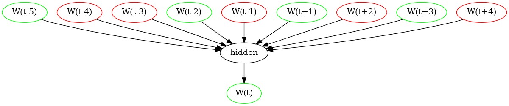
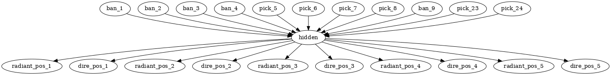
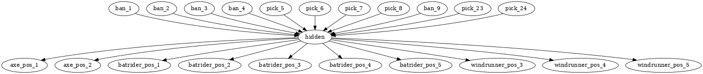
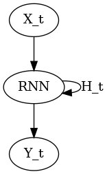
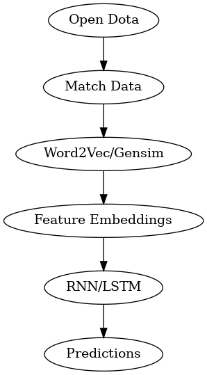

Dota Draml
Table of Contents
1 idea
I would like to be able to determine the best next pick in a dota draft.
Given a draft up to a point– say Radiant has picked Mirana and Ogre and Dire has picked Rubick and Pudge– what is the best next pick?
Perhaps Slark is strong because he can jump Rubick and dispell Pudge's ultimate. Maybe there is a better pick. Perhaps the team you are playing has won every game vs Slark?
It would also be great to discern builds and strategies during the draft phase. Suppose you are playing into Mirana, Ogre Magi, and Slark. Force Staff is almost mandatory, but when should I buy this? Is it better to buy Force Staff first, or should you get more lane sustain like a Sage's Mask, or maybe a Headdress?
I should be able to answer the question "what is the best next pick and what are my lane matchups" at every stage, and (secondary) "what should my build be"
The tool should be sensitive to new data and able to refine itself to counter meta-breaking strategies. It should take into account hero/draft winrates over the course of a tournament.

| Phase | Radiant | Dire |
|---|---|---|
| ban | bounty hunter | lina |
| ban | lich | muerta |
| pick | mirana | rubick |
| pick | ogre magi | pudge |
| ban | faceless void | ember spirit |
| ban | drow ranger | clinkz |
| ban | troll warlord | ursa |
| pick | slark | weaver |
| pick | slardar | spirit breaker |
| ban | arc warden | shadow fiend |
| ban | queen of pain | necrophos |
| pick | outworld devourer | magnus |
2 training methods
2.1 recommendation algorithm
Given choices X and Y and Z what is the best next choice
2.1.1 Pros
This is a mature algorithm with investment from Netflix and Amazon. Surely there are good papers and resources on this
2.1.2 Cons
Most rec. algorithms are geared towards like-things (TV shows, products, books, music) while our algorithm should recommend a diverse set of heroes.
2.2 vector analysis
Think of each character as a vector. Ideally a team should be comprised of diverse heroes or vectors pointing in different directions.
- Relevant metrics/dimensions
- stun
- disarm
- healing
- dispell (hard/soft)
- health
- damage mitigation
- spell immunity
- survivability
- farm speed
- power curve (duration of game)
- damage curve (duration of teamfight) https://www.youtube.com/watch?v=f0JCpxmcm68
2.2.1 Gensim
A popular Python library for creating vector space embeddings commonly used in NLP is gensim. We should be able to generate vectors (size=30?) representing hero features with which to represent heroes within our model.
Likely this would involve creating a "dictionary" of one-hot encoded dota heroes and training on many "sentences" (dota drafts)
2.2.2 Feature Extraction
Lame, boring, outdated; see [prompt engineering]
2.2.3 Links
Relevant blog post https://gilgi.org/blog/dota-hero-embedding/
[1]
2.2.4 Keywords
Word2Vec, CBOW, skip-gram
2.2.5 Pros
Easily represents relations between heroes/items. This is likely a useful way to represent data regardless of training method.
2.2.6 Cons
This is hard. A hero is more than the sum of its skills.
Metrics make this a bit better, but I am frontloading all the work by coming up with metrics by hand. It would be much better to dynamically generate/"learn" vector dimensions.
Also vector lengths seem problematic. Lion has two disables (spike+hex) which is totally different from Pangolier who has multiple little stuns IF he hits the roll, and both of these are different from storm spirit who has a stun (vortex) on a low cooldown. If Pangolier simply has a different stun magnitude than Lion this is insufficient because the skills are totally different AND the ability to use two different stuns vs a single multi-stunning ability is relevant. Ideally this should be solved by having non-hardcoded vector dimensions.
Pango Swashbuckle (multi-hit attack) combined with a Basher (stun on attack) is much more effective than a Basher on Alchemist (though still useful). The transformation is non-linear.
Pangolier + Basher + Troll Warlord - Pangolier != Troll Warlord
Heroes+item transformations cannot be accurately represented by the same vector space.
NOTE: This is NOT an issue; vector embeddings are N-dimensional and there must exist some dimension that represents heroes and items linearly.
Some heroes may be lane counters, but not lategame counters. This can also be fixed by increasing dimensions.
2.3 LLM Method
This could be done by filling in heroes and asking a model "what hero is in this position"
| Phase | R | D |
|---|---|---|
| ban | bounty | lina |
| ban | lich | muerta |
| pick | XXXX | rubick |
| pick | ogre magi | pudge |
Given the draft until this point, what hero was picked first?
Perhaps weight by frequency– how often the hero is picked– and winrate– how often does the game end in a win when this hero is chosen.
Something to keep in mind is pick order and role. Usually supports pick first, but strange pick orders (like first pick Muerta carry bc it's strong and there are few counterpicks) or flex picks (OG IO carry for example) might introduce complications.
2.3.1 CBOW

NOTE: this visualization does not incorperate bans, but could easily be modified to do so. Not all dota games use the same ban order, but they DO all have the same pick order, so focusing on picks increases our usable data set.
2.3.2 Links
[1]
2.3.3 Keywords
CBOW (continuous bag of words), skip-gram, RNN (recurrent neural network), LSTM (long short-term memory)
2.3.4 Pros
Easy, similar to current LLM techniques
2.3.5 Cons
The problem with this approach is that it will ONLY predict the most commonly picked hero, not the optimal hero.
2.4 Prompt engineering
Encode -> generate prompt (few-shot?) based on hero/item encodings -> GPT -> profit??
3 data tricks
3.1 Negative sampling
This can be used to select 2-20[1] heroes to use as a negative example to expand our data pool. The smaller our data pool the more heroes we should select.
3.2 multi-sampling games
Each game can be sampled multiple times (every ~5min) to gather data of many gamestates
- Inputs
- radiant/dire picks/bans (24 total)
- 2 bans each (alternating)
- 1 radiant, 2 dire, 1 radiant pick
- 3 bans each (alternating)
- 1 dire, 2 radiant, 1 dire pick
- 2 bans each (alternating)
- 1,1 pick
- game time
- radiant/dire hero data
- 5 heroes (per hero)
- items
- 6 items, 3 backpack, 1 tp slot, 1 neuteral item slot
- KDA
- track consumables bought (tango,mango,salve,blood grenade)
- gold
- level/XP
- GPM/XPM (gold/XP per minute)
- meta stats
- disable duration
- stun/silence/root
- hero damage
- tower damage
- creep score/last hits
- disable duration
- items
- 5 heroes (per hero)
- radiant/dire picks/bans (24 total)
3.2.1 Pros
Generates lots of training data
3.2.2 Cons
This could bias long games
4 API
4.1 opendota
Can list pro players/matches
https://api.opendota.com/api/proMatches
https://api.opendota.com/api/proPlayers
Can query with custom SQL
5 model model
5.1 predict draft
Inputs are hero pick/ban order.
Outputs are heroes assigned to their predicted roles.

5.2 predict pick
Inputs are hero pick/ban order.
Outputs are percentages for each hero+position. How good is axe pos 1 or batrider pos 2?

5.3 RNN
Input Xt is a vector representing the last picked hero
The recurrent parameter Ht is recurrent
The output Yt is a vector that should be near the best hero choice
LLMs are only able to learn a few time steps in the past[1] due to the multiplicative nature of the recurrent edge update. This means that LSTMs are the preferred method.

6 Random links
- Papers to read
- Compositional Fairness Constraints for Graph Embeddings
- Mixed Dimension Embeddings with Application to Memory-Efficient Recommendation Systems alt
- Lightweight Compositional Embeddings for Incremental Streaming Recommendation
- conditional network embeddings
- Mercator: uncovering faithful hyperbolic embeddings of complex networks
- The use of machine learning algorithms in recommender systems: A systematic review
- SMPrompt: Semantic-driven Augmented Templates and Multiple Mappings for Effective Prompt Learning
- Other
7 Citations
7.1 Defense of the Ancients DOTA 2 Draft Recommendation System
https://ieeexplore.ieee.org/abstract/document/9776822
Y. Mohammed, S. Srinivasan, S. Iyer and A. Nagarajan, "Defense of the Ancients (DOTA 2)-Draft Recommendation System," 2022 6th International Conference on Trends in Electronics and Informatics (ICOEI), Tirunelveli, India, 2022, pp. 13-17, doi: 10.1109/ICOEI53556.2022.9776822.
